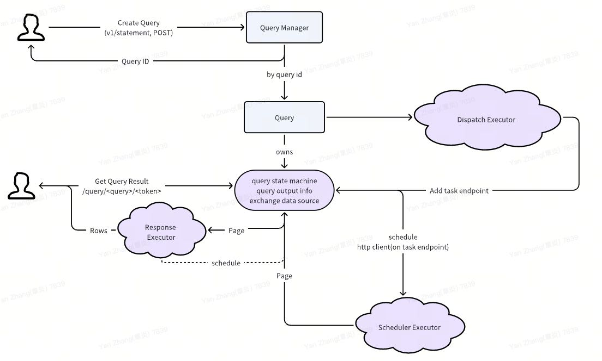
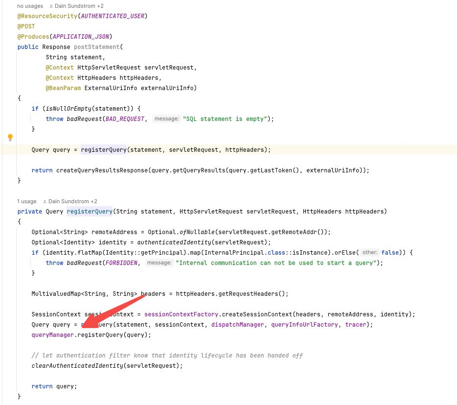
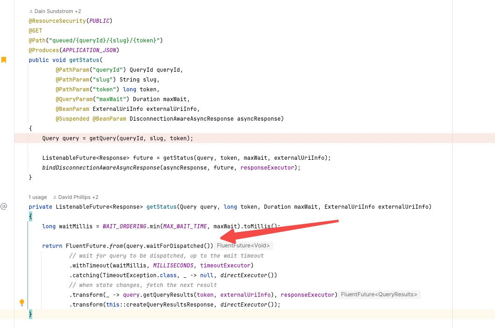
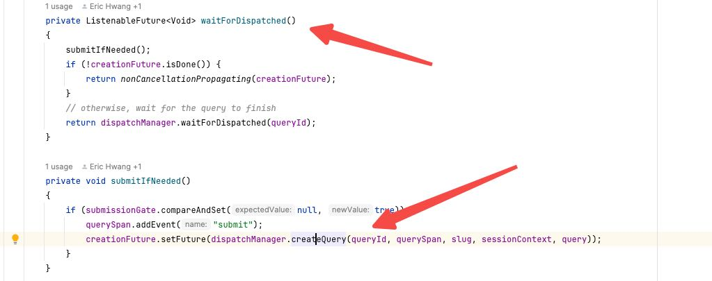
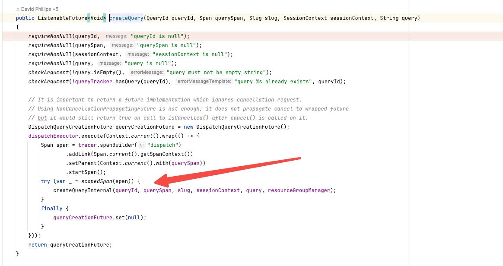
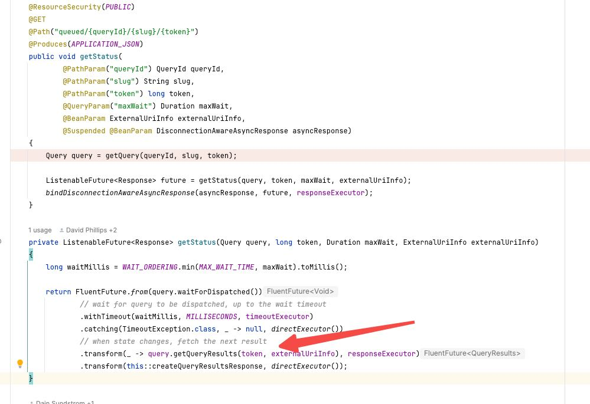
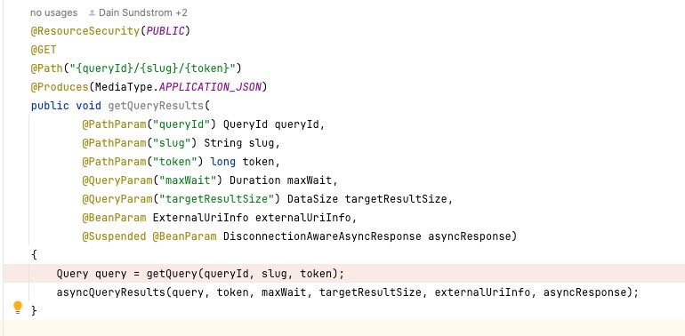

Trino 查询调度和线程池
Table of Contents
1. 总体流程

这里稍微简单总结一下流程，用户分为两步：
Create Query:
- 创建query, 返回query id, 并且将query 放在dispatch executor里面去进行调度执行。
- Query dispatch executor 下发plan成功之后，就在query的exchange data source里面记录be endpoint.
- Exchange data source内部开始去将http client(be endpoint)放在scheduler executor里面去调度，http client拿到pages之后，缓存在exchange data source里面。
Get Query Result:
- 根据query id找到Query对象，进而找到exchange data source对象。
- 从exchange data source对象里面拿到page, 丢到response executor里面变换成为rows返回。
- 拿到page之后，同时调用exchange data source 的 reschedule接口，让http client去获取更多的pages.
主要有3个线程池：
- Dispatcher线程池，这个用来对query进行调度的。
- Scheduler线程池，这个用来不断对query task endpoint取page的。
- Response线程池，这个用来响应用户查询数据的，主要是处理page->rows的处理。
2. Create Query
QueuedStatementResource
主要过程：
- 执行registerQuery, 创建query对象，然后放在queryManager里面去，返回query id.
- 之后我们就可以通过query id去拿到这个query对象。
- 注意这个时候并没有开始执行，只是创建了query对象。

3. Execute Query
ExecutingStatementResource
3.1. 触发调度
根据query id 去查询query status, 这里同时会去触发调度。



可以看到这个调度是放在 `dispatchExecutor` 这个对象里面去执行的的，这个东西看上去线程池没有上线，但是有queue size上限，也就是超过这么多query的话其实并不会马上执行。
public static final int DISPATCHER_THREADPOOL_MAX_SIZE = max(50, getRuntime().availableProcessors() * 10);
public DispatchExecutor(QueryManagerConfig config, VersionEmbedder versionEmbedder)
{
ExecutorService coreExecutor = newCachedThreadPool(daemonThreadsNamed("dispatcher-query-%s"));
closer.register(coreExecutor::shutdownNow);
executor = decorateWithVersion(coreExecutor, versionEmbedder);
ScheduledExecutorService coreScheduledExecutor = newScheduledThreadPool(config.getQueryManagerExecutorPoolSize(), daemonThreadsNamed("dispatch-executor-%s"));
closer.register(coreScheduledExecutor::shutdownNow);
scheduledExecutor = listeningDecorator(coreScheduledExecutor);
mbeans = new DispatchExecutorMBeans(coreExecutor, coreScheduledExecutor);
}
@Inject
public DispatchManager(
QueryIdGenerator queryIdGenerator,
QueryPreparer queryPreparer,
ResourceGroupManager<?> resourceGroupManager,
DispatchQueryFactory dispatchQueryFactory,
FailedDispatchQueryFactory failedDispatchQueryFactory,
AccessControl accessControl,
SessionSupplier sessionSupplier,
SessionPropertyDefaults sessionPropertyDefaults,
SessionPropertyManager sessionPropertyManager,
Tracer tracer,
QueryManagerConfig queryManagerConfig,
DispatchExecutor dispatchExecutor,
QueryMonitor queryMonitor)
{
this.queryIdGenerator = requireNonNull(queryIdGenerator, "queryIdGenerator is null");
this.queryPreparer = requireNonNull(queryPreparer, "queryPreparer is null");
this.resourceGroupManager = requireNonNull(resourceGroupManager, "resourceGroupManager is null");
this.dispatchQueryFactory = requireNonNull(dispatchQueryFactory, "dispatchQueryFactory is null");
this.failedDispatchQueryFactory = requireNonNull(failedDispatchQueryFactory, "failedDispatchQueryFactory is null");
this.accessControl = requireNonNull(accessControl, "accessControl is null");
this.sessionSupplier = requireNonNull(sessionSupplier, "sessionSupplier is null");
this.sessionPropertyDefaults = requireNonNull(sessionPropertyDefaults, "sessionPropertyDefaults is null");
this.sessionPropertyManager = sessionPropertyManager;
this.tracer = requireNonNull(tracer, "tracer is null");
this.maxQueryLength = queryManagerConfig.getMaxQueryLength();
this.dispatchExecutor = new BoundedExecutor(dispatchExecutor.getExecutor(), queryManagerConfig.getDispatcherQueryPoolSize());
this.queryTracker = new QueryTracker<>(queryManagerConfig, dispatchExecutor.getScheduledExecutor());
this.queryMonitor = requireNonNull(queryMonitor, "queryMonitor is null");
this.statsUpdaterExecutor = newSingleThreadScheduledExecutor(daemonThreadsNamed("dispatch-manager-stats-%s"));
}
3.2. 等待Response
这里可以看到触发调度之后，还回等待执行结果，以及检查超时。
- 检查超时是在 timeoutExecutor
- 获取结果是在 responseExecutor（实际没有得到任何结果，只是reponse OK）
- 将结果变为response 是在 directExecutor 执行
trino里面非常多地使用了future特性，并且支持在不同的线程池上执行。 分阶段事件驱动架构 - 维基百科 — Staged event-driven architecture - Wikipedia

如果是null的话，那么后面流程就不在处理。这里就会返回null. 拿不到任何数据。如果拿不到任何数据，就要等待more response这个部分的流程。
UPDATE: 但是我进入这个函数似乎里面没有设置任何data, 可能只设置了一个token的东西，所以主要获取数据还是在接下来这个部分。
3.3. 等待更多Response

private void asyncQueryResults(
Query query,
long token,
Duration maxWait,
DataSize targetResultSize,
ExternalUriInfo externalUriInfo,
DisconnectionAwareAsyncResponse asyncResponse)
按照gpt的解释，这个东西可以按需进行获取，并且控制每次targetResultSize. 但是线程池模型和上面一样，也包括responseExecutor和directExecutor这两类。 这种多轮获取还有好处可能就是可以追踪进度了。
用途描述
- 异步获取查询结果:
- 该接口允许客户端通过提供 queryId 和其他标识符（如 slug 和 token），异步拉取查询的结果。
- 查询结果并不是通过一个请求返回的，而是通过多次调用该接口分批获取。
- 支持长轮询机制:
- maxWait 参数允许客户端指定最长等待时间（例如 1 秒），Coordinator 会在指定时间内等待查询结果可用。
- 如果结果尚未生成且超时，客户端需再次调用此接口。
- 动态控制结果大小:
- targetResultSize 参数让客户端动态调整期望的结果集大小，用于优化网络传输和结果消费的性能。
- 检查查询状态:
- 如果查询已失败或被取消，该接口可以返回相应状态，让客户端感知查询状态的变化。
- 接口通过验证 slug 和 token，确保只有正确的客户端能获取对应查询的结果。
4. asyncQueryResults
如果继续看 `asyncQueryResults` 代码的话，主要是调用waitForResults. 这个函数做几件事情：
- 创建futureStateChange ( `getFutureStateChange` ). 这个表示有数据到来
- 同时把这个future设置timeout exception避免太长
- 如果有数据来了的话，那么在 `resultsProcessorExecutor` 这个executor上执行。 (其实这个executor就是上面写的reponseExecutor).
private void asyncQueryResults(
Query query,
long token,
Duration maxWait,
DataSize targetResultSize,
ExternalUriInfo externalUriInfo,
DisconnectionAwareAsyncResponse asyncResponse)
{
Duration wait = WAIT_ORDERING.min(MAX_WAIT_TIME, maxWait);
if (targetResultSize == null) {
targetResultSize = DEFAULT_TARGET_RESULT_SIZE;
}
else {
targetResultSize = Ordering.natural().min(targetResultSize, MAX_TARGET_RESULT_SIZE);
}
ListenableFuture<QueryResultsResponse> queryResultsFuture = query.waitForResults(token, externalUriInfo, wait, targetResultSize);
ListenableFuture<Response> response = Futures.transform(queryResultsFuture, this::toResponse, directExecutor());
bindDisconnectionAwareAsyncResponse(asyncResponse, response, responseExecutor);
}
public ListenableFuture<QueryResultsResponse> waitForResults(long token, ExternalUriInfo externalUriInfo, Duration wait, DataSize targetResultSize)
{
ListenableFuture<Void> futureStateChange;
synchronized (this) {
// before waiting, check if this request has already been processed and cached
Optional<QueryResults> cachedResult = getCachedResult(token);
if (cachedResult.isPresent()) {
return immediateFuture(toResultsResponse(cachedResult.get()));
}
// release the lock eagerly after acquiring the future to avoid contending with callback threads
futureStateChange = getFutureStateChange();
}
// wait for a results data or query to finish, up to the wait timeout
if (!futureStateChange.isDone()) {
futureStateChange = addTimeout(futureStateChange, () -> null, wait, timeoutExecutor);
}
// when state changes, fetch the next result
return Futures.transform(futureStateChange, _ -> getNextResult(token, externalUriInfo, targetResultSize), resultsProcessorExecutor);
}
这个ResponseExecutor定义在这里
@Provides
@Singleton
@ForStatementResource
public static BoundedExecutor createStatementResponseExecutor(@ForStatementResource ExecutorService coreExecutor, TaskManagerConfig config)
{
return new BoundedExecutor(coreExecutor, config.getHttpResponseThreads());
}
4.1. getFutureStateChange
其实这里创建的元素，就是看 `exchangeDataSourceBlocked` 上是否有数据。至于这个future，则是看 `exchangeDataSource` 上是不是还有数据。
private synchronized ListenableFuture<Void> getFutureStateChange()
{
// if the exchange client is open, wait for data
if (!exchangeDataSource.isFinished()) {
if (exchangeDataSourceBlocked != null && !exchangeDataSourceBlocked.isDone()) {
return exchangeDataSourceBlocked;
}
ListenableFuture<Void> blocked = exchangeDataSource.isBlocked();
if (blocked.isDone()) {
// not blocked
return immediateVoidFuture();
}
// cache future to avoid accumulation of callbacks on the underlying future
exchangeDataSourceBlocked = ignoreCancellation(blocked);
return exchangeDataSourceBlocked;
}
exchangeDataSourceBlocked = null;
if (!resultsConsumed) {
return immediateVoidFuture();
}
// otherwise, wait for the query to finish
queryManager.recordHeartbeat(queryId);
try {
return queryDoneFuture(queryManager.getQueryState(queryId));
}
catch (NoSuchElementException e) {
return immediateVoidFuture();
}
}
4.2. getNextResult
这个函数里面有个主要的调用
private synchronized QueryResultRows removePagesFromExchange(ResultQueryInfo queryInfo, long targetResultBytes)
调用这个函数的时候，说明exchangeDataSource里面其实是有数据的，那么只需要pollPage就OK了。并且在这里做deserialize Page.
try {
long bytes = 0;
while (bytes < targetResultBytes) {
Slice serializedPage = exchangeDataSource.pollPage();
if (serializedPage == null) {
break;
}
Page page = deserializer.deserialize(serializedPage);
bytes += page.getLogicalSizeInBytes();
resultBuilder.addPage(page);
}
if (exchangeDataSource.isFinished()) {
exchangeDataSource.close();
deserializer = null; // null to reclaim memory of PagesSerde which does not expose explicit lifecycle
}
}
catch (Throwable cause) {
queryManager.failQuery(queryId, cause);
}
5. ExchangeDataSource
ExchangeDataSource 这个对象是个接口，我觉得可以理解为buffer queue. 但是注意这里exchange input其实是task endpoint, 真正在等待获取数据是在poll page这里执行。注意这里exchange data source加入的是task endpoint, 但是出来的其实是page.
那么如何是用be endpoint -> page, 这个被封装在了实现里面，被 `directExchangeClientSupplier` 来处理。这个在PollPage这节有说。
public interface ExchangeDataSource
extends Closeable
{
Slice pollPage();
boolean isFinished();
ListenableFuture<Void> isBlocked();
void addInput(ExchangeInput input);
void noMoreInputs();
OperatorInfo getInfo();
@Override
void close();
}
public class DirectExchangeInput
implements ExchangeInput
{
private static final int INSTANCE_SIZE = instanceSize(DirectExchangeInput.class);
private final TaskId taskId;
private final String location;
@JsonCreator
public DirectExchangeInput(
@JsonProperty("taskId") TaskId taskId,
@JsonProperty("location") String location)
{
this.taskId = requireNonNull(taskId, "taskId is null");
this.location = requireNonNull(location, "location is null");
}
ExchangeDataSource exchangeDataSource = new LazyExchangeDataSource(
session.getQueryId(),
new ExchangeId("query-results-exchange-" + session.getQueryId()),
session.getQuerySpan(),
directExchangeClientSupplier,
new SimpleLocalMemoryContext(newSimpleAggregatedMemoryContext(), Query.class.getSimpleName()),
queryManager::outputTaskFailed,
getRetryPolicy(session),
exchangeManagerRegistry);
5.1. AddInput
AddInput是将ExchangeInput加入到exchangeSource里面去，这个通常是在创建query阶段就完成了。
@Override
public void taskCreated(PlanFragmentId fragmentId, RemoteTask task)
{
URI taskUri = uriBuilderFrom(task.getTaskStatus().getSelf())
.appendPath("results")
.appendPath("0").build();
DirectExchangeInput input = new DirectExchangeInput(task.getTaskId(), taskUri.toString());
queryStateMachine.updateInputsForQueryResults(ImmutableList.of(input), false);
}
private void fireStateChangedIfReady(Optional<QueryOutputInfo> info, Optional<Consumer<QueryOutputInfo>> listener)
{
if (info.isEmpty() || listener.isEmpty()) {
return;
}
executor.execute(() -> listener.get().accept(info.get()));
}
private synchronized void setQueryOutputInfo(QueryExecution.QueryOutputInfo outputInfo)
{
// if first callback, set column names
if (columns == null) {
List<String> columnNames = outputInfo.getColumnNames();
List<Type> columnTypes = outputInfo.getColumnTypes();
checkArgument(columnNames.size() == columnTypes.size(), "Column names and types size mismatch");
ImmutableList.Builder<Column> list = ImmutableList.builder();
for (int i = 0; i < columnNames.size(); i++) {
list.add(createColumn(columnNames.get(i), columnTypes.get(i), supportsParametricDateTime));
}
columns = list.build();
types = outputInfo.getColumnTypes();
}
outputInfo.drainInputs(exchangeDataSource::addInput);
if (outputInfo.isNoMoreInputs()) {
exchangeDataSource.noMoreInputs();
}
}
5.2. PollPage
如果将ExchangeInput变为Page. 里面有个 `DirectExchangeClient` 类来做处理。这个类内部有个方法：相当于会不断地调用client去获取pages, 并且添加到buffer里面。如果buffer里面足够的话，那么就不会进行scheudle.
synchronized int scheduleRequestIfNecessary()
{
if ((buffer.isFinished() || buffer.isFailed()) && completedClients.size() == allClients.size()) {
return 0;
}
long neededBytes = buffer.getRemainingCapacityInBytes();
if (neededBytes <= 0) {
return 0;
}
long reservedBytesForScheduledClients = allClients.values().stream()
.filter(client -> !queuedClients.contains(client) && !completedClients.contains(client))
.mapToLong(HttpPageBufferClient::getAverageRequestSizeInBytes)
.sum();
long projectedBytesToBeRequested = 0;
int clientCount = 0;
Iterator<HttpPageBufferClient> clientIterator = queuedClients.iterator();
while (clientIterator.hasNext()) {
HttpPageBufferClient client = clientIterator.next();
if (projectedBytesToBeRequested >= neededBytes * concurrentRequestMultiplier - reservedBytesForScheduledClients) {
break;
}
projectedBytesToBeRequested += client.getAverageRequestSizeInBytes();
client.scheduleRequest();
// Remove the client from the queuedClient's set.
clientIterator.remove();
clientCount++;
}
return clientCount;
}
每个client都会被放在一个schedule executor里面去执行，这个是全局的。
@Provides
@Singleton
@ForStatementResource
public static ScheduledExecutorService createStatementTimeoutExecutor(TaskManagerConfig config)
{
return newScheduledThreadPool(config.getHttpTimeoutThreads(), daemonThreadsNamed("statement-timeout-%s"));
}